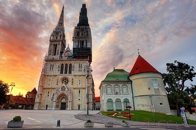
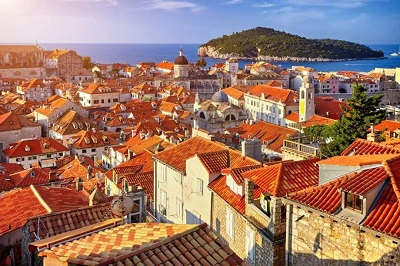

morly旅游网
克罗地亚共和国（克罗地亚语：Republika Hrvatska，英语：Republic of Croatia），简称克罗地亚，是位于欧洲东南部的共和国，处于地中海及巴尔干半岛潘诺尼亚平原的交界处，首都为萨格勒布。
8世纪末到9世纪初，克罗地亚人建立早期封建国家， 10世纪建立了强盛的克罗地亚王国 ， 1918年12月，克罗地亚与其他南斯拉夫人联合成立了塞尔维亚-克罗地亚-斯洛文尼亚王国（1929年改称南斯拉夫王国），1945年成为南斯拉夫联邦人民共和国的一个加盟共和国，1991年6月宣布脱离南斯拉夫社会主义联邦共和国独立，并于2009年加入北约，2013年7月1日加入欧盟
克罗地亚是一个发达的资本主义国家。经济以第三产业为主，第二产业为副，旅游业是国家经济的重要组成部分，克罗地亚经济基础良好，旅游、建筑、造船和制药等产业发展水平较高。足球和网球并列为克罗地亚的第一运动。
克罗地亚位于中欧的东南边缘，巴尔干半岛的西北，亚得里亚海东岸。隔亚得里亚海与意大利相望，北部的邻国是斯洛文尼亚和匈牙利，东面和南面则是塞尔维亚与波黑。总面积56594平方公里。海岸线长1778公里。
萨格勒布
是中欧历史名城，建于十一世纪，最早由一些居民聚居区逐渐发展来。十三世纪形成了有一定规模的城市。到了十九世纪随着欧洲工业革命的发展，萨格勒布市也逐渐从老城扩展出新城。整个城市由三部分组成：即由教堂、市政厅等古建筑组成的老城，也称上城区，和由广场、商业区、歌剧院组成的新区，又称下城区，以及战后发展起来的现代化市区。市中心为耶拉西奇广场，这里设有许多政府机构、银行及商业办公中心，在广场的中央矗立着克罗地亚民族英雄班·约瑟夫·耶拉西奇的巨型雕塑。在广场周围还集中了许多18、19世纪的巴洛克建筑
科尔丘拉岛
又译考库拉岛，是克罗地亚共和国达尔马提亚省亚得里亚海域的一个岛屿，地处克罗地亚最南端，距克罗地亚首都萨格勒布600多公里，距贝尔格莱德（塞尔维亚共和国首都）1000多公里。有人说没有哪个岛能像科尔丘拉岛那样拥有如此多的传说和历史遗迹。与Lokrum岛和姆列特岛（Mljet）一样，它是克罗地亚森林覆盖率最高的岛屿。科尔丘拉岛长48公里，宽6-8公里，面积279平方公里。最高点海拔568米。主要由石灰岩、白云岩、砂岩组成。岩溶地貌遍布。
杜布罗夫尼克
杜布罗夫尼克是克罗地亚东南部港口城市，位于达尔马提亚海岸南部石灰岩半岛上，风景绮丽、气候宜人，是克罗地亚最著名的旅游胜地之一，也是著名的疗养胜地。杜布罗夫尼克古迹众多，这些古建筑具有罗马风格、哥特风格、文艺复兴风格和巴洛克风格。同时，这里的岛屿星罗棋布，林木茂盛，海水清澈，阳光充足，海岸风光旖旎，是旅游者向往的胜地。乔治·萧伯纳曾说过，“如果你想看到天堂到底是什么样子，那么去杜布罗夫尼克吧！”
斯普利特
斯普利特是克罗地亚南部港市，位于亚得里亚海东岸，是达尔马提亚地区第一大海港，也是克罗地亚的历史名城，疗养和游览胜地。斯普利特的城市建筑是以罗马皇帝戴克里先夏宫为核心发展起来的，1979年斯普利特的老城中心戴克里先宫殿被列入联合国世界文化遗产，斯普利特城内有大量的博物馆与美术馆，拥有大量珍贵的藏品。
内容整理至网络，如有侵权，请联系我们！1255394075@qq.com